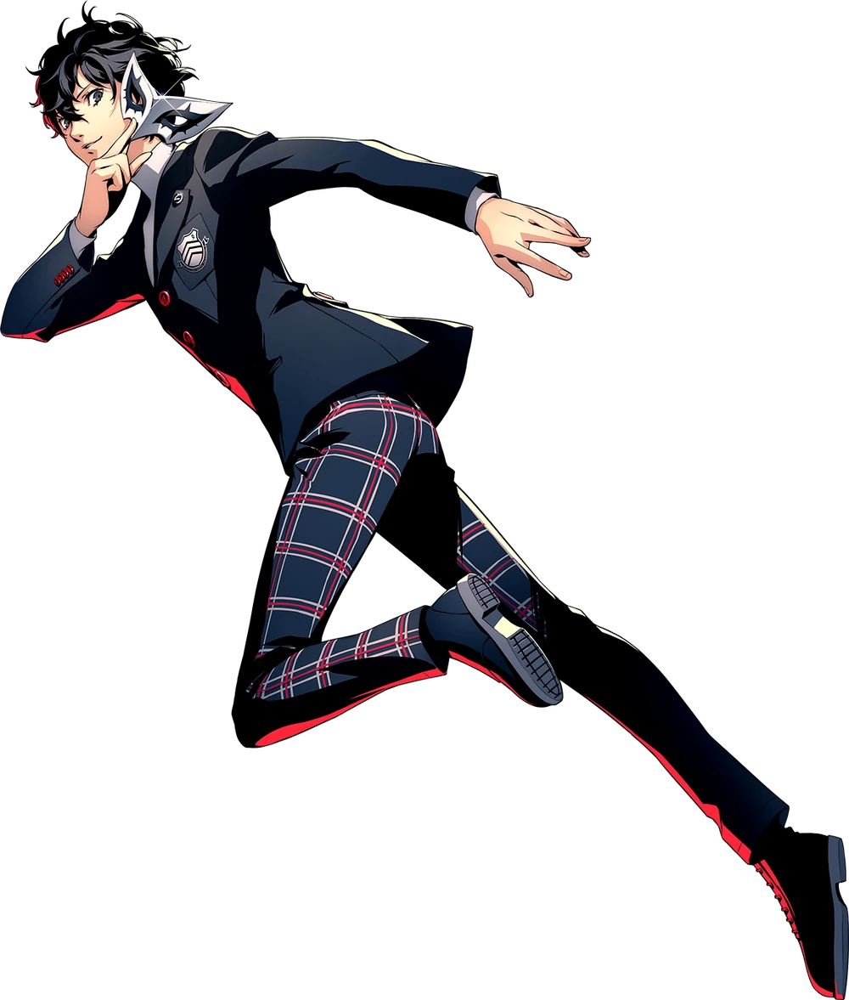

Those are the main characters of Persona 5.

The protagonist of Persona 5. After being falsely accused of a crime, he moves to Tokyo and starts a new life as a student. Upon awakening his Persona, he takes on the identity of Joker and leads the Phantom Thieves in their mission to change the hearts of corrupt people.